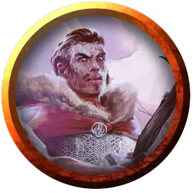

Сэр Брэфорд
Sir Braford
Средний Гуманоид (Человек), нейтрально-злой, именной НИП

Класс Доспеха 18 (кольчужная рубаха, щит)
Хиты 19 (3к8 + 6)
Скорость 30 футов
| мод | спас | ||
|---|---|---|---|
| СИЛ | 16 | +3 | +3 |
| ЛОВ | 9 | −1 | −1 |
| ТЕЛ | 14 | +2 | +2 |
| мод | спас | ||
|---|---|---|---|
| ИНТ | 10 | +0 | +0 |
| МДР | 13 | +1 | +1 |
| ХАР | 14 | +2 | +2 |
Навыки Атлетика +5, Восприятие +3
Чувства пассивное Восприятие 13
Языки Общий
Опасность 1/2 (100 опыта)
Бонус мастерства +2
Особенности
Дубовая кора. КД Сэра Брэфорда не может быть ниже 16.
Особое снаряжение. Сэр Брэдфорд владеет разрушающим остриём [shatterspike], магическим длинным мечом, который дарует +1 к попаданию и урону, наносимым с его помощью (уже включено в его атаку).
Древесный раб. Если древа Галтиас погибнет, Шарвин умрет через 24 часа.
Действия
Длинный меч. Рукопашная атака оружием: +6 к попаданию, досягаемость 5 футов, одна цель. Попадание: 8 (1к8 + 4) рубящего урона или 9 (1к10 + 4) рубящего урона, если используется двумя руками.
Реакции
Защита. Когда существо, которое видит сэр Брафорд, атакует цель, находящуюся в радиусе 5 футов от него, он может реакцией выставить свой щит и наложить помеху на данный бросок атаки.
Описание
Во время путешествия в окрестностях Цитадели Вечной тени сэр Брэдфорд и его спутники были схвачены гоблинами. Юный паладин Пелора был развращен зловещим древом Галтиас и теперь орудует своим волшебным мечом Разрушающее остриё во имя другого “божества”.